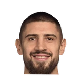

“Coach and I talked about this, I didn’t give coach enough tools and the Bagley trade was a big tool for us. We didn’t have enough athleticism up front. We needed to address that, and we did. I feel better for the team that we were able to acquire that young man and give us a tool we didn’t have. I think as the year went on, I continued to grow and find my footing. Like the team, it’s a big summer for the front office and myself. I’m looking forward to that challenge as well.”

What NBA players and coaches have said about Marvin Bagley
19 quotes about Marvin Bagley from 15 players, coaches and executives, newest first. Each one links to its original source.
Best quotes
Divac on why Bagley over Doncic:
“Marvin for us is a better fit, a better player and a great talent. It was an easy choice for us.”
Kings General Manager, Vlade Divac was asked about his decision to go with Bagley instead of Doncic.
“Marvin for us is better fit, better player and great talent. So, it was an easy choice for us,”
Quotes per season
Who talks about Marvin Bagley most
 Luke Walton on Marvin Bagley3 quotes
Luke Walton on Marvin Bagley3 quotes- Troy Weaver on Marvin Bagley2 quotes
- Vlade Divac on Marvin Bagley2 quotes

Alex Len1 quote Cade Cunningham1 quote
Cade Cunningham1 quote De'Aaron Fox1 quote
De'Aaron Fox1 quote Dirk Nowitzki1 quote
Dirk Nowitzki1 quote Dwane Casey1 quote
Dwane Casey1 quote Harrison Barnes1 quote
Harrison Barnes1 quote Hassan Whiteside1 quote
Hassan Whiteside1 quote- Joel Berry1 quote
 Kent Bazemore1 quote
Kent Bazemore1 quote
2023-24
2 quotes“Marvin and Isaiah are young players with positional size, high character and a competitive nature who will have the opportunity to further their development within our system and build on the positives we’ve seen from them,”
Lambert Will on Marvin Bagley, Isaiah LiversNBA.com
Monty on Bagley:
“Changed the game. He came in and played with a great deal of force … defensively I thought he did a much better job calling out screening actions, which helped our guards out.”
2021-22
6 quotes“Coach and I talked about this, I didn’t give coach enough tools and the Bagley trade was a big tool for us. We didn’t have enough athleticism up front. We needed to address that, and we did. I feel better for the team that we were able to acquire that young man and give us a tool we didn’t have. I think as the year went on, I continued to grow and find my footing. Like the team, it’s a big summer for the front office and myself. I’m looking forward to that challenge as well.”
Casey on Marvin Bagley III finding success with the Pistons:
“There was a lot of expectations. Here, it's a clean slate. He's a young talent. He's athletic. His length, he's a lob threat for us. He's a shot blocker.”
Cunningham on playing with Bagley:
“It definitely opens it up for us, having somebody who can get above the rim, you have to help a lot harder and check the roll man, whatever ... super happy to have him.”
Weaver on Marvin Bagley III:
“We're excited about adding Marvin to our group. He fits our timeline with these other young guys. The one thing we were void of, and that's on me, is athleticism in the frontcourt. He will provide that.”
Jason Anderson:Luke Walton on Marvin Bagley III's chances of getting into the rotation at some point:
“The chances are great. Everyone on our team is going to get opportunities this year. We’re going to need everybody. Every practice we’ve had, including the one yesterday, is high energy.”
Jason Anderson:Luke Walton on Bagley's knee soreness:
“He said he’s feeling much better today. Tomorrow is an off day, so it just kind of makes sense for anyone who’s going through anything at all to have today and tomorrow as treatment-type days and be ready to get after it again on Thursday.”
2020-21
5 quotesJason Anderson:Kings coach Luke Walton on Marvin Bagley III:
“He’s doing better as well and the team is going to release a statement very soon as far as what the official statement will be, so I’ll let them do that.”
Jason Anderson:Hassan Whiteside on teams attacking Marvin Bagley III defensively:
“A lot of teams are doing that, but I talk to him. ... I want him to get mad about that. You want to take that personal. You don’t want them to target you on defense and feel like you’re a liability out there.”
“Me, Marvin, Luke talked for five seconds because it wasn’t a big deal. But like I said, when you’re playing basketball if you’re thinking about what somebody said on Twitter, then this ain’t for you. I’m 100 percent completely honest with you when I tell you nobody’s thinking about that while we’re on the court.”
Kings center Alex Len on Marvin Bagley III's latest injury:
“That’s unfortunate. He had a rough season, injury after injury. We’re going to support him as much as we can. He’s a big part of this team, so we’re definitely going to miss him.”
Kings GKent Bazemore on practice standouts:
“It’s my first time really playing with Marvin Bagley. He was injured during the season, so to see him out there, how athletic he is. Bogi is really strong right now. Fox is moving as fast as ever. Belly’s shooting the crap out of it.”
2019-20
1 quoteHarrison Barnes on Marvin Bagley III, who withdrew from Team USA to prep for the Kings' season:
“Marvin was killing. He was doing his thing. He got promoted, but unfortunatley he wasn’t able to continue, but I thought he was on his way to having a nice impact on this team.”
2018-19
1 quoteNowitzki told reporters following the game.
“[Marvin] Bagley's looked great off the bench. There's not a lot of guys that get you 20 and 10 off the bench. He's an instant problem off the bench.”
2017-18
4 quotesDivac on why Bagley over Doncic:
“Marvin for us is a better fit, a better player and a great talent. It was an easy choice for us.”
Kings General Manager, Vlade Divac was asked about his decision to go with Bagley instead of Doncic.
“Marvin for us is better fit, better player and great talent. So, it was an easy choice for us,”
North Carolina'sJoel Berry on Marvin Bagley:
“I’ve never seen somebody be able to jump up in the air, hit the ground and get back up as fast as he can. He’s very athletic. He can dribble the ball. He’s long. So there’s a lot he can do. He’s going to be a top pick for a reason.”
Joel Berry on Marvin BagleyTwitter @sbordow
Wendell Carter Jr. on Bagley's eligibility:
“My role changed a little bit. But I do whatever I have to do to win.”